1. Active SPC Charts
As of June 2026, there are 1,427 active SPC charts across the 11 presses. 1,380 are on part characteristics in five classes: cut geometry (hole position and part length and width), formed characteristics (formed heights and bend angles), hole diameter, sheared edges, and flatness. 897 (65%) of these are variable charts, plotting dimensions read off a gauge; 483 (35%) are attribute charts, tallying pass/fail pin checks on hole diameters and burr checks on sheared edges. The other 47 charts are on press tonnage: an EWMA on each press's per-stroke total and a chart on each load channel's share of it.
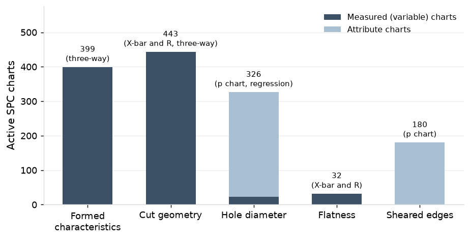
Each SPC chart belongs to one characteristic on an individual part, and each part carries an average of 8 charts. The shop's parts fall into six programs. Automotive is the largest at 48 parts and 373 charts, HVAC the smallest at 12 and 90.
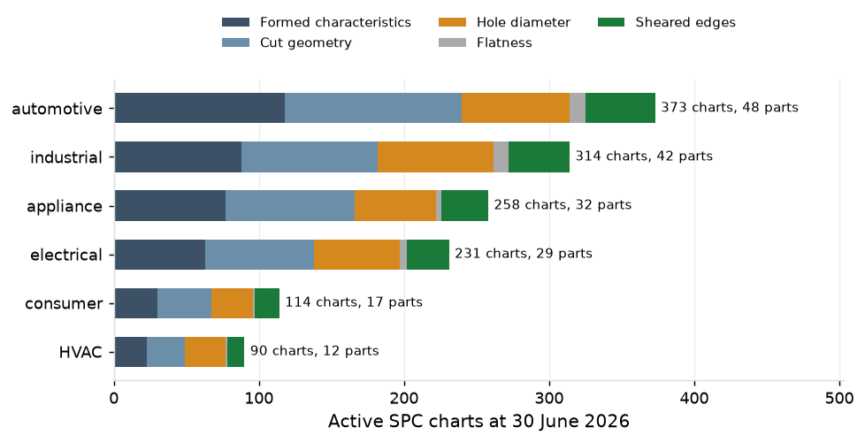
Each part is assigned to one press. Presses carry up to 20 parts each, with PR-03, PR-06 and PR-09 being dedicated presses that run only their ten assigned parts. Each press carries three or five tonnage charts, one for its total and one for each load channel.
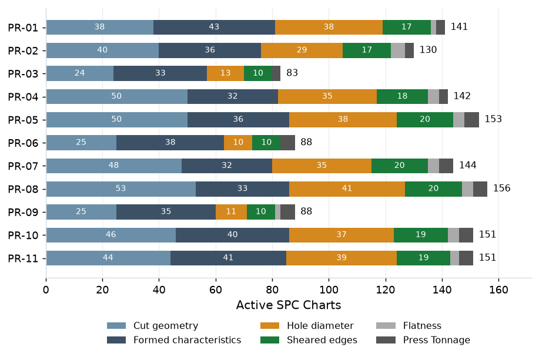
Each chart collects subgroup measurements only while its part is running. The frequency of measurements differs by press: every 30 minutes on the high-speed presses and every 60 on the others. PR-03 produces 750 subgroup measurements a week (18% of total) because it has 16% more running hours a week than the other high-speed presses.
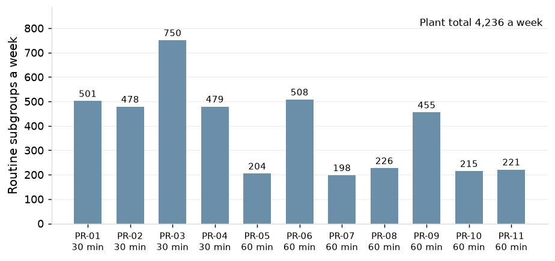
2. Chart Design
Chart Types
Six different chart types are used for the SPC charts. X-bar and R, three-way, and regression charts are used for the variable charts on part characteristics (cut geometry, formed characteristics, hole diameter, and flatness), and their selection is based on the underlying variance of the characteristic. P charts are used for the attribute checks (pin checks on hole diameters and burr checks on sheared edges). EWMA and channel-share charts are used for the press's per-stroke tonnage.
X-bar and R (cut geometry and flatness; 474 charts)
Cut geometry and flatness vary piece to piece (97.5% and 98.4% of variance is within subgroups) and so use standard X-bar and R charts whose limits are set from the spread within subgroups.
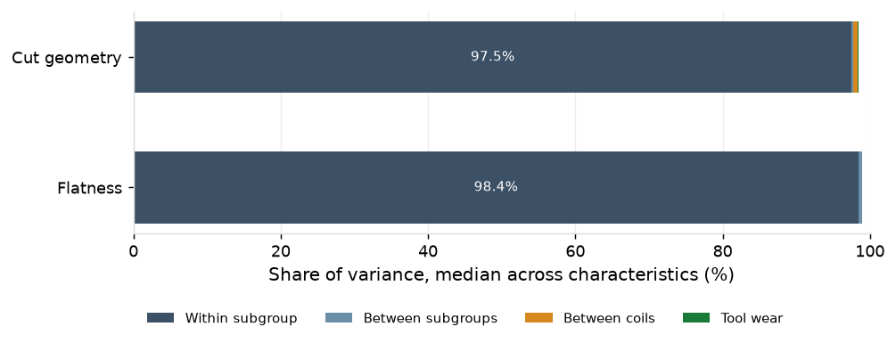
In the sample X-bar and R chart output below, the upper panel plots each subgroup's mean against a center line and control limits, and the lower panel plots its range, the spread between the largest and smallest piece, against an upper control limit. The center line and control limits come from the baseline, calculated off the first 25 subgroups after the chart is set up, and reset only on the triggers in Section 2.3.
Four rules are applied to determine whether this chart produces a signal that the process has potentially changed:
- Rule #1: one point beyond the three-sigma control limit
- Rule #2: two out of three consecutive points beyond two-sigma
- Rule #3: four out of five consecutive points beyond one-sigma
- Rule #4: eight points in a row on one side of the center line
In the sample, hole to hole C on P-15609 runs about its center line of 63.997 mm, every mean inside limits of 63.973 to 64.020 mm and every range below 0.087 mm, with no run-rule pattern. This represents a stable process.
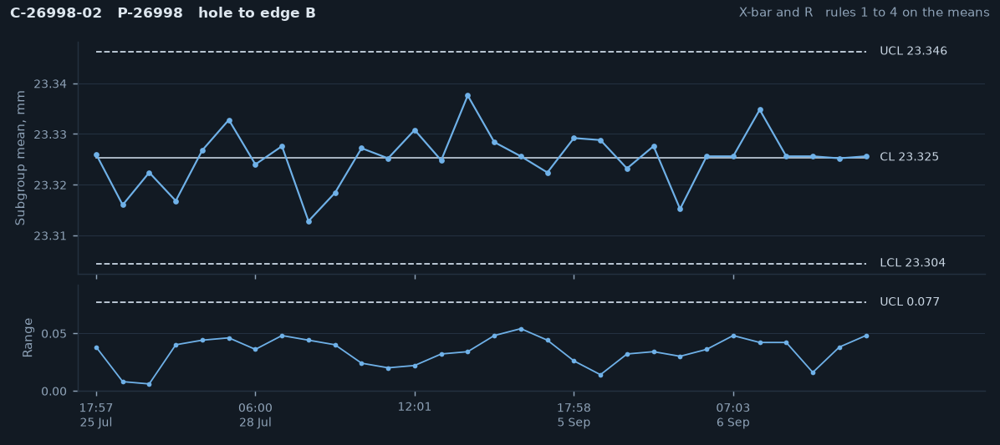
Three-way (formed characteristics; 399 charts)
On formed characteristics (formed heights and bend angles), 49.7% of the incoming variance lies between coils, from differences in coil thickness and hardness. The shop controls for this by re-centering the forming station at each coil change, dropping this variance to 12.3%. Three-way charts are used for formed characteristics to account for this residual coil change variance.
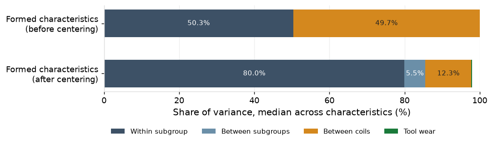
The three-way chart plots each subgroup's mean as an individual value, the change from the previous mean as a moving range, and each subgroup's range, the spread between the largest and smallest piece. All three take their control limits from one baseline, calculated when the chart is first set up off 25 subgroups spanning at least ten coil changes, and reset only on the triggers in Section 2.3.
The first panel is similar to the X-bar chart, except its limits include the offset each coil keeps after centering, and a point beyond them means the level has moved further than coil-to-coil differences explain. Those wide limits make it slow to show a sudden change that stays inside them, so the second panel is a moving-range chart that tracks the change between consecutive subgroup means and signals on an abrupt jump. The third panel is a range chart that tracks the spread among the pieces within each subgroup, which coil offsets do not affect, and signals when the pieces themselves spread apart. Between them, a coil's offset is absorbed, and a change in level, a sudden step or a widening spread each still signals on its own panel.
Only Rule #1 is applied to these charts to produce signals, because the coil offset produces data that is not independent, and so Rules #2-4 can't be used. In the sample below, the level steps at each coil change and stays inside the individuals limits, representing a stable process.
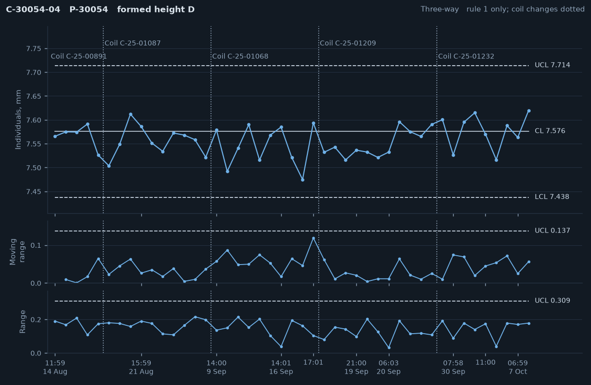
Regression (hole diameter; 23 charts)
On hole diameters, 36.1% of the variance is from tool wear, as the hole grows while the punch edge wears down between sharpenings. Regression charts are used to account for this predictable change so they signal only on variation that is not related to tool wear.
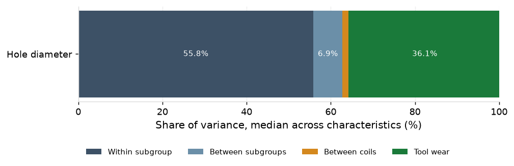
The regression chart plots each subgroup's mean against a center line that rises with the shots since the die was last sharpened, and control limits that rise with it. The center line is the tool wear line: a regression of hole diameter on shots since sharpening, fitted over the subgroups from the die's earlier sharpening intervals. The control limits sit three residual sigmas on either side of it. At each sharpening the line returns to its starting diameter, and the first 25 subgroups are used to re-fit the line and limit width.
All four rules are applied to the regression charts to determine whether it produces a signal that the process has potentially changed. The chart below shows no run-rule patterns, indicating a stable process.
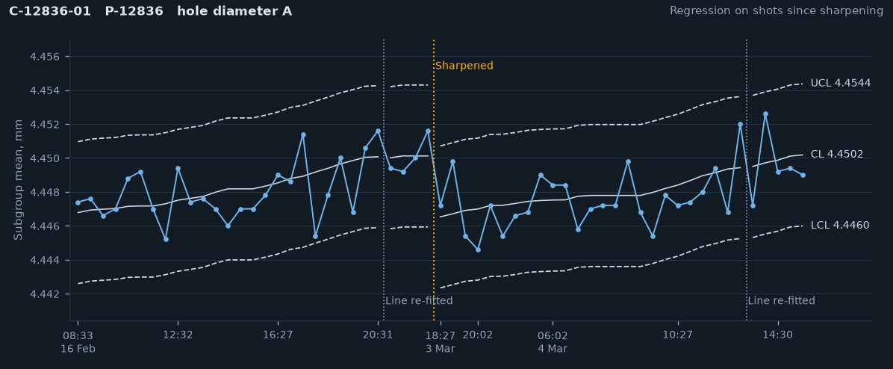
p charts (attribute checks; 483 charts)
Two attribute checks (pin checks on hole diameters and burr checks on sheared edges) tally pass/fail outcomes. These outcomes are binary, and so p charts are used, tracking the fraction of each check that fails rather than a measured value.
In the sample output below, each point is one check of 5 pieces, plotted as the fraction that failed, against a center line at the baseline fail rate and an upper control limit three standard errors above it. A single failed piece in a 5-piece subgroup puts a check at 20%, far above the limit, so every failed piece is a signal. The chart cannot show a fail rate rising before pieces fail, so the control sits upstream (in the case of burr checks, tool sharpening).
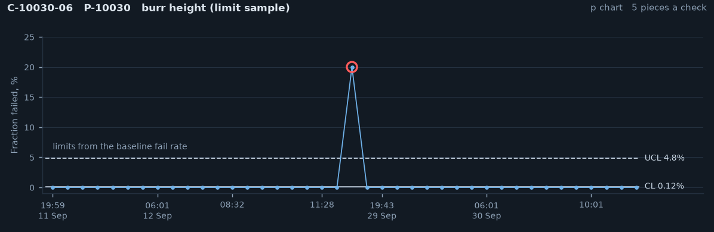
EWMA and Channel-share (per-stroke tonnage; 47 charts)
The press monitor reads the load on each upright every stroke. An EWMA on the per-stroke total accumulates small load drops such as a chipped punch's, and a residual chart on each channel's share catches the shift of load toward the corner nearest the break. The total is autocorrelated at lag 1 by 0.60 and varies by 1.49% within a run, so the EWMA runs on the AR(1)-adjusted variance.
Control limits are set at each run start from the first 500 production strokes, 2,219 times in the year. These charts produce a signal whenever the EWMA or a single channel's share crosses the limit. The chart below shows a stable process.
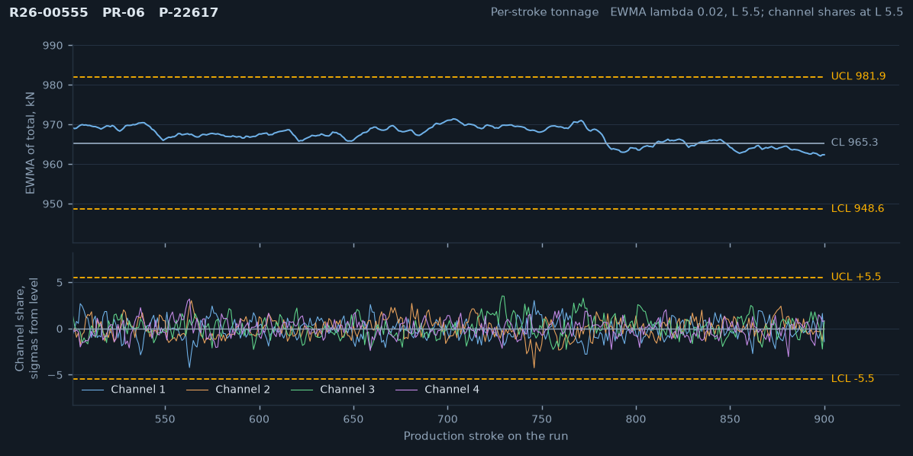
Measurement systems
Each part has its own check fixture at the press: 180 fixtures read 800 charts across cut geometry (369), formed characteristics (399) and flatness (32). 29 calipers at the presses read 74 cut-geometry charts, and 12 indicators read the 23 hole-diameter regression charts. The pin checks use 35 pin gauges, and the burr check is the operator's, with burr height measured on the laboratory gauge.
Accuracy and stability. 765 calibrations in the year: 756 passed, 8 were adjusted and one, F-14026, was rebuilt. The check fixtures were verified against their masters 4,102 times and failed once.
| Gauge type | Calibrations or verifications | Passed | Adjusted | Rebuilt | Failed |
|---|---|---|---|---|---|
| Check fixtures | 371 | 365 | 5 | 1 | |
| Calipers | 40 | 40 | 0 | 0 | |
| Indicators | 117 | 117 | 0 | 0 | |
| Pin gauges | 194 | 191 | 3 | 0 | |
| Other gauges (burr gauge, hardness tester, micrometer, plug) | 43 | 43 | 0 | 0 | |
| Fixture verifications against the master | 4,102 | 4,101 | 1 |
Precision. 205 of the 221 (93%) variable-chart gauges have a gauge R&R (%GRR) under the 10% threshold. 16 (7%) are between 10% and 30%, and each has a restudy scheduled. None of the gauges sit above the 30% tolerance threshold. One check fixture (F-14026) was rebuilt over the past year, shown below. It failed its daily verification, read 16.7% on restudy, and was rebuilt and restudied at 5.3% two weeks later.
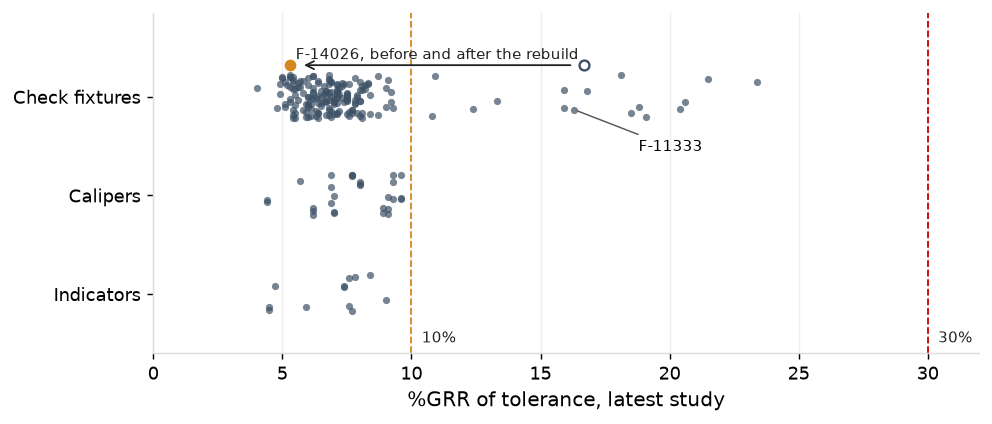
Measurement's share. The gauge accounts for 1.5% of the within-subgroup variance on cut geometry, 1.2% on formed characteristics, 2.7% on hole diameter and 0.9% on flatness, so the within-subgroup variance identified in 2.1 is almost entirely the process's own.
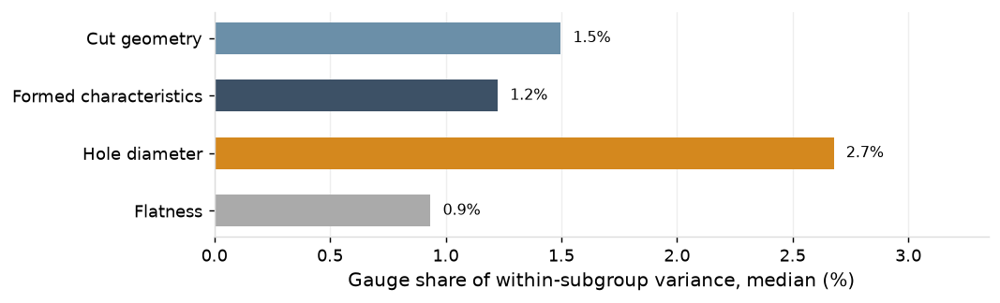
Attribute agreement. All 24 burr-check operators are qualified per the latest attribute agreement study, at kappa 0.78 to 0.89 (1.00 means perfect agreement), all above the 0.75 threshold.
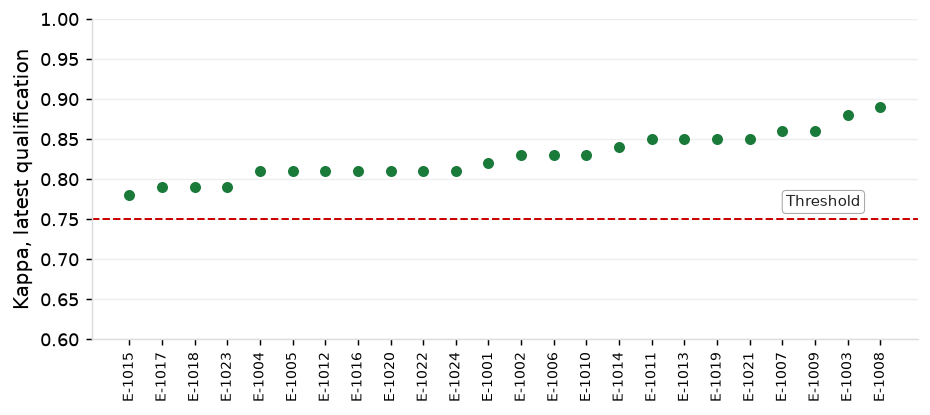
Control Limits
Over the past 12 months, 254 new control limits were issued on the 897 variable charts (683 run on limits issued before the record, 214 on limits issued in the year). At the annual review in January 2026, 74 charts were issued new limits.
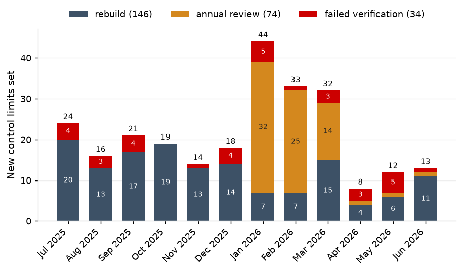
Verification held the limits across 408 sharpenings and failed on 33 of them (8.1%), inside its design range of 3% to 9%; by chart, 34 of 1,100 X-bar and R (3.1%), 2 of 67 regression (3.0%) and 3 of 141 three-way after rebuild (2.1%). The passes sit at a median 0.21 sigma from center, and the chance of a false failure is under 0.001%, so each failure is a die that came back at a different level.
| Verification | Verifications | Failed | Failure rate |
|---|---|---|---|
| X-bar and R, after sharpening | 1,100 | 34 | 3.1% |
| Regression, after sharpening | 67 | 2 | 3.0% |
| Three-way, after rebuild | 141 | 3 | 2.1% |
| By sharpening, any chart of the die | 408 | 33 | 8.1% |
3. Chart Performance
Signals and causes
SPC charts are designed to signal when the process may have changed and to stay quiet when it has not. A signal is a point beyond a control limit or a run-rule pattern (2.1). It sends the operator to look for a special cause: a specific, identifiable source of variation outside the process's normal running, corrected at its source once found, whether the die, the material, the gauge or the record. A signal with no assignable cause is one where the investigation finds nothing and so is deemed a chance signal from the process's normal variation. Whether the processes are good enough for the drawing is a capability question, reported quarterly in the Quarterly Capability & SPC Review: in April to June 2026, 93 of 100 critical characteristics ran above Ppk 1.33.
Over the past 12 months, the variable characteristic charts (X-bar and R, three-way, and regression) signaled 12,185 times: 42 were the first signal of a special-cause event, 1,617 followed on from those 42 events (i.e., the charts kept producing signals from the same special cause event), and 10,526 had no assignable cause. The per-stroke tonnage charts signaled 520 times, stopping the press each time, 427 with a special cause finding and 93 with no assignable cause. The attribute checks carry no special causes: the burr checks recorded 268 nonconforming pieces in 219,535 (0.12%) and the pin checks 278 in 324,225 (0.09%).
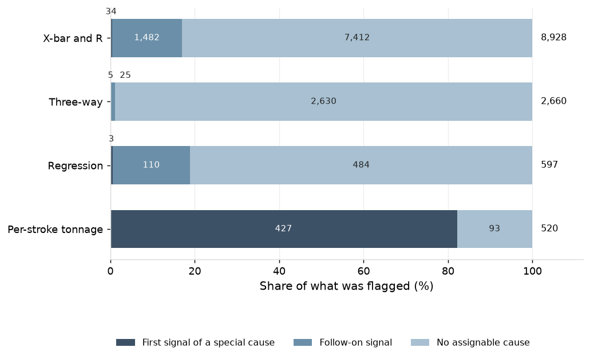
469 signals were traced to a special cause over the past year. The variable characteristic charts most commonly found special causes related to a die at a new level after sharpening or rebuild (33) and faults related to strip misfeed, slug pull, gauge zeroing, or lubricant issues (6).
| What was caught | Chart | Events | Alarms |
|---|---|---|---|
| Die at a new level after sharpening or rebuild | X-bar and R, three-way, regression | 33 | 1,620 |
| Fixture drift (F-14026) | X-bar and R, three-way | 1 | 30 |
| Strip misfeed, slug pulling, gauge zeroing, lubricant | X-bar and R, three-way | 6 | 7 |
| Soft coil (C-15731-07) | three-way | 1 | 1 |
| Sharpening logged at the wrong count (PR-06) | regression | 1 | 1 |
| Slug pulling, worn and chipped punches | per-stroke EWMA and channel share | 427 | 427 |
The per-stroke tonnage charts produced 427 signals that were found to have a special cause. Of them, 274 (64%) were due to slug pulling, 82 (19%) due to a worn punch, and 71 (17%) due to a chipped punch.
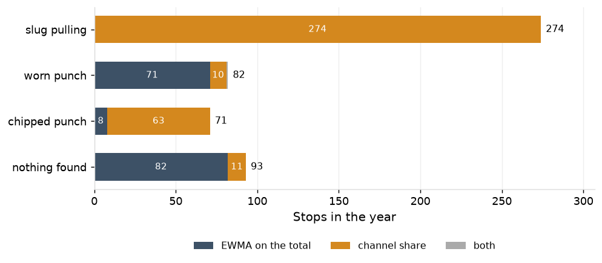
Observed against expected
Over the past year, there were 8,510 signals (92% of total), or 163 signals per week, that produced no assignable cause. The charts below compare this figure to the expected rate, which is what the design predicts: for each chart at its own rules and baseline size, the chance that a subgroup carries at least one signal on any of its panels. The design expects 133 signals with no assignable cause a week across the plant, 3.1 per 100 routine subgroups.
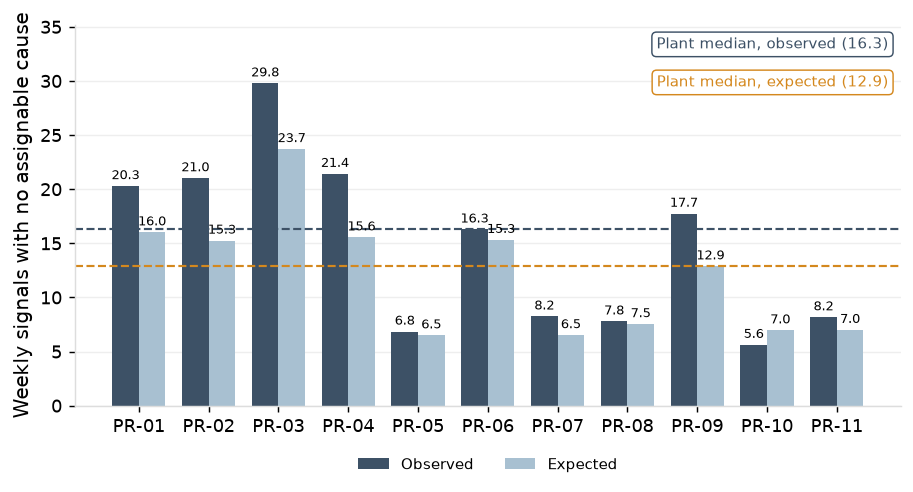
The X-bar and R charts (cut geometry and flatness) were the only ones that produced signals with no assignable cause at a rate within the design's expectations. The regression charts (hole diameters) ran above expectation because a die that comes back from sharpening up to 1.5 sigma off its line passes verification and then runs under the old line, raising rule 3 and 4 signals. The three-way charts ran below expectation because their limits carry the residual coil offset by design, so rule 1 signals less often than it would on an independent process.
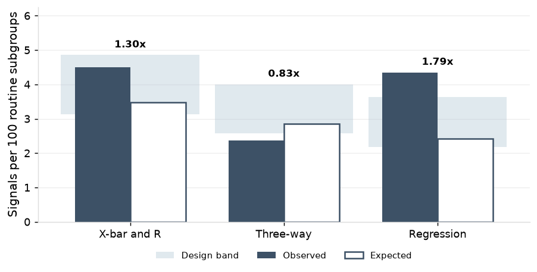
On the tonnage charts, stops with nothing found ran at 1.02 per million strokes against 0.91 per million expected by design, but not chart by chart: the EWMA stopped 82 times against about 34 expected, 41 of them on PR-03, and the channel-share charts 11 times against about 48.